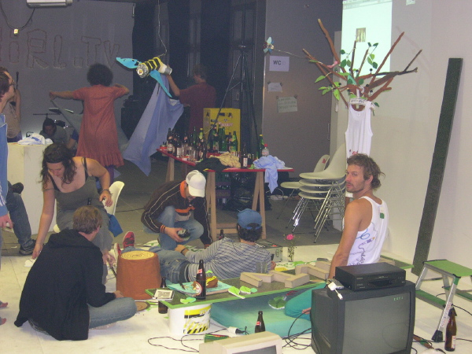
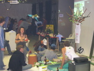

| <--- |  |
--->  |
audience and artists
Belichtungsart: program (auto)
Art der Belichtungsmessung: matrix
Belichtungszeit: 0.017 s (1/60)
Blendeneinstellung: f/3.2
Entfernung: 11.1mm (35mm equivalent: 52mm)
ISO: 380
Blitz: Yes (manual)
Dateigrösse: 446749 bytes
Kamerahersteller: NIKON
Kameramodell: E4300
Aufnahmedatum: 6. September 2005 23:43:14
Auflösung: 1600 x 1200